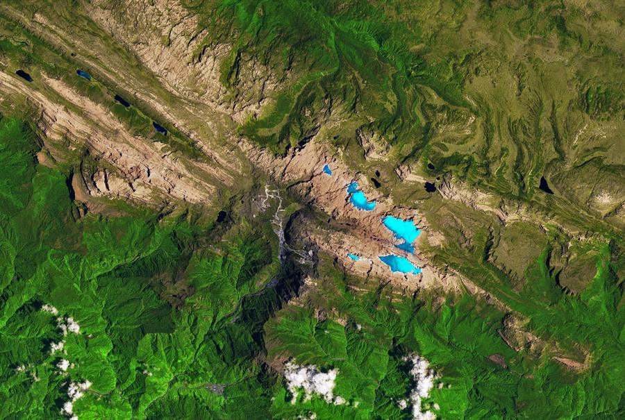
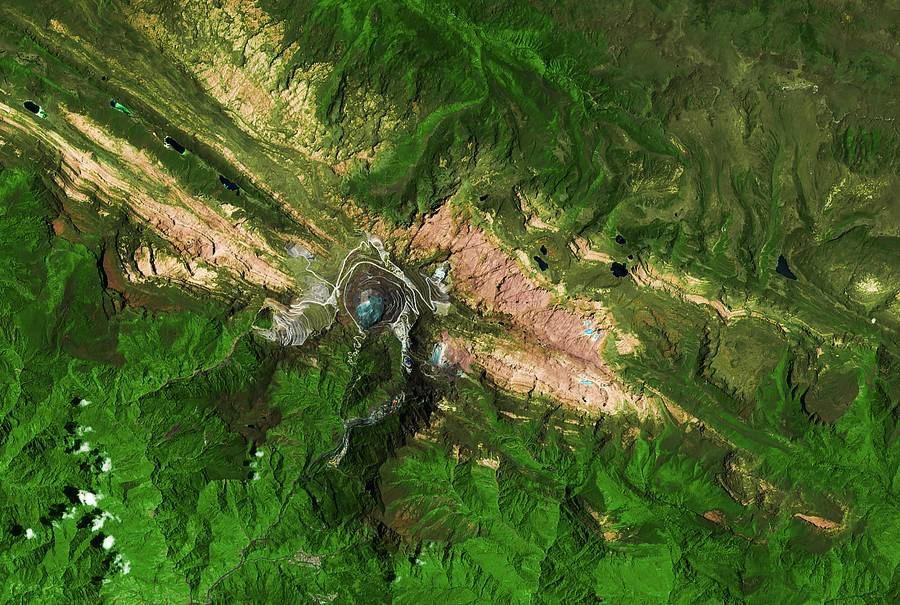
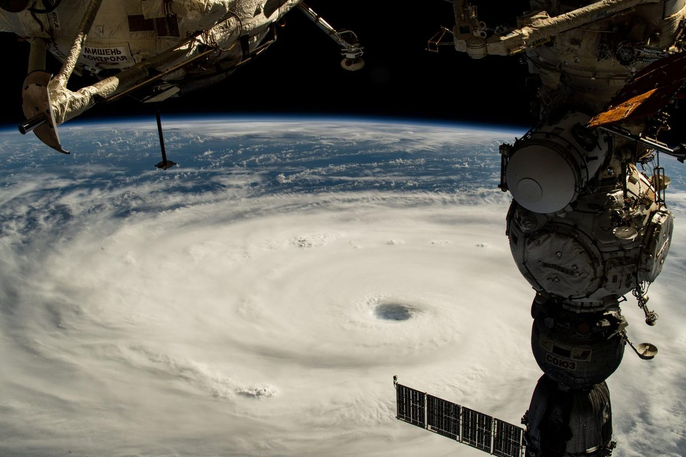
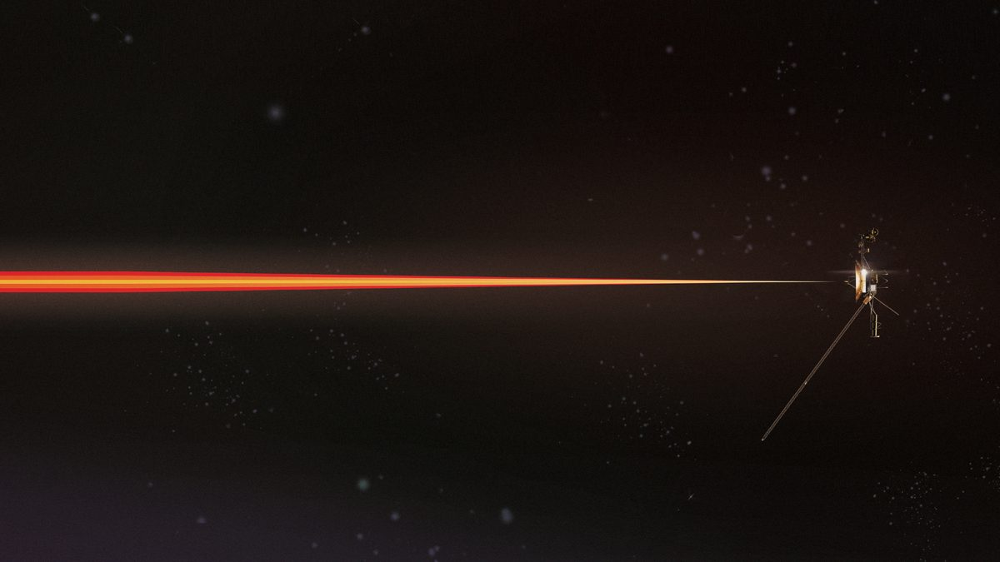
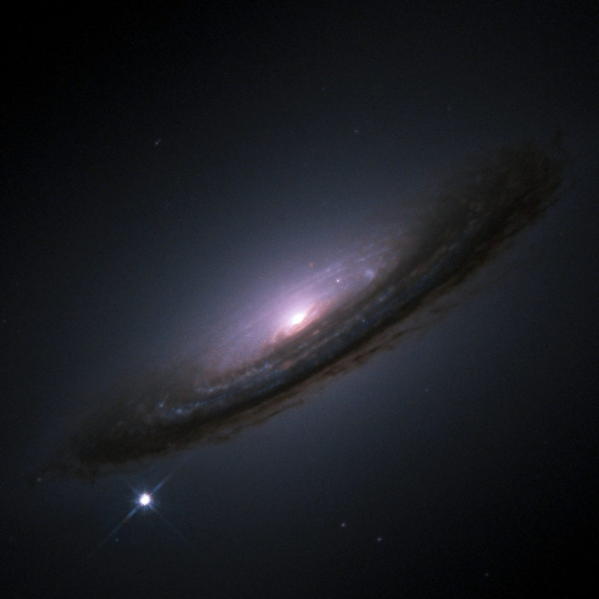

怎麼讀 ：每篇先看「三句話」，再讀英文「關鍵段」，然後點「讀原文」去讀完整英文。中文只是導讀，不是全譯。
讀完看「還沒解決的問題」，那才是真正有趣的地方。最後的「校對紀錄」列出導讀裡每個數字出自原文哪一段，歡迎抓錯。本期最短的是第 2 篇（約 330 個英文字，適合第一次試著整篇讀完）；進階篇在第 4 篇，也是四篇裡最長的。第 3 篇的「一個問題」需要紙筆。
地科 · 冰河與氣候 基礎 原文約 560 字 · 4 分鐘
赤道上最後的冰：查亞峰的冰薄到不會流動，已經不算冰河了
The Last Ice on Puncak Jaya


印尼新幾內亞島蘇迪曼山脈、查亞峰（Puncak Jaya）一帶的假色影像。左：1988 年，Landsat 5；右：2026 年，Landsat 9。淺藍色是冰，褐色是裸露岩盤，綠色是植被，白色是雲。左圖中央那幾塊藍色，在右圖幾乎找不到了（放大看還有幾個小藍點）。右圖中央的灰色圓形構造原文沒有說明，應該是緊鄰的露天礦場，請自己查證。為了看清楚冰，這裡只截取原圖的中央部分。圖：NASA Earth Observatory／Lauren Dauphin，使用 USGS 的 Landsat 資料（公有領域）。
三句話
新幾內亞島的查亞峰一帶，是赤道附近少數幾個終年有冰的地方。1988 年這裡的冰河面積約 4.31 平方公里；到 2025 年 9 月只剩約 0.09 平方公里，大約一打足球場，是 1988 年的 2% 左右。
冰不只變小，也變薄：主要監測點的冰厚從 2010 年的 32 公尺掉到 2023 年的 4 公尺，2024 年 11 月那個點的冰已經完全消失。剩下的冰碎成小塊、靜止不動，印尼氣象氣候地球物理局（BMKG）的 Donaldi Permana 說，它們「作為活動冰河的功能性生命實際上已經結束」。
聖嬰年對這些冰特別傷：氣溫升高讓「結冰高度」升到山頂以上，本來該下的雪變成雨，少了會反光的新雪，深色的表面吸收更多熱。2015–2016 聖嬰期間冰一年變薄約 5.3 公尺，是平常的五倍左右；現在又碰上一個聖嬰。
原文關鍵段
To qualify as a glacier, a body of ice generally has to be thick enough to flow downhill under its own weight, and it needs an area where snow builds up faster than it melts. Puncak Jaya’s remaining ice has thinned so much and broken into such small, stagnant patches that it no longer flows.
As the air warms, the freezing level rises above the summit, so precipitation falls as rain instead of snow. That means less fresh white snow that normally reflects sunlight and shields the ice, leaving darker surfaces that absorb more heat and melt faster.
要算得上是冰河，一塊冰通常必須厚到能靠自己的重量往下坡流動，而且要有一個積雪比融雪快的區域。查亞峰剩下的冰已經薄了太多，碎成太小、停滯不動的冰塊，不再流動了。
當空氣變暖，結冰高度升到山頂之上，降水就以雨而不是雪的形式落下。這表示平常會反射陽光、保護冰的新鮮白雪變少了，留下顏色較深的表面，吸收更多熱、融得更快。
術語表
glacier冰河（冰川） 不是「很大的冰」就算。原文給的條件有兩個：厚到會自己流動，而且有積累區。台灣課本用「冰河」，中國用「冰川」。
tropical glacier熱帶冰河 位在南北回歸線之間的冰河，只能存在於很高的山上。原文還點名委內瑞拉的洪堡冰河殘跡、秘魯的奎爾卡亞冰帽、坦尚尼亞的吉力馬札羅冰原。
freezing level結冰高度／0 °C 層高度 大氣中氣溫降到 0 °C 的高度。山頂在它之上才下得了雪。氣象署冬天報「雪線」「高山降雪機率」時，看的就是這條線落在多高。
stagnant停滯的 形容不再流動的冰。這個字是「冰河」和「一塊殘冰」的分界。
firn粒雪 隔年沒融完、被壓得半密實的雪，是雪變成冰河冰的中間階段。監測點 East Northwall Firn 的名字就來自這個字。
false-color image假色影像 用人眼看不到的波段（例如短波紅外）合成的影像。這裡是為了讓冰（淺藍）和雲（白）分得開，真實顏色下兩者都是白的。
bedrock岩盤／基岩 冰底下的岩石。雪落在裸露的深色岩盤上留不住，所以冰一旦破碎，就很難長回來。
canary in the coal mine礦坑裡的金絲雀 英文慣用語：最先出事、用來預警的東西。熱帶冰河本來就活在「冰能存在的最暖條件」邊緣，所以最早反應。
house of cards紙牌屋 退休冰河學家 Chris Shuman 的比喻：冰裂開後多出更多邊緣可以融，一張倒了就全倒，「沒有回頭路」。
El Niño聖嬰 第 1 到 3 期都講過。這篇補上一個新的後果：它把西太平洋高山的 0 °C 線往上推。
為什麼重要
課本講「反照率回饋」時通常拿北極海冰當例子：冰融了露出深色海水，吸更多熱，融更快。這篇是同一個機制的高山版，而且多了一步：先是雪變成雨，然後才是表面變暗。另一個值得學的是「定義」的力量。新聞常說「冰河消失了」，但科學家說的是更精確的一句話：冰還在，只是不再符合冰河的定義。讀科學文章時，留意作者到底是說「東西不見了」還是「東西不再算是某一類」，兩者差很多。最後，這是一個被聖嬰年一次一次加速的過程，和前三期的聖嬰報導是同一條線。
還沒解決的問題
剩下的冰還能撐多久？原文給了兩個答案：近年的衛星研究說主要冰體可能在 2030 年左右完全消失；BMKG 的估計則是「可能早得多」，因為現在的聖嬰會加速。兩邊都沒有給確切年份。
2026 年到底剩多少，現在沒有人知道：0.09 平方公里是 2025 年 9 月的數字，Permana 說 12 月的空中調查才會有今年的估計。
2019 年 PNAS 那篇論文的摘要寫「以目前的速率，這些冰河很可能在十年內消失」，也就是 2029 年前後。七年後回頭看，這個預測算準嗎？「冰河已經功能性死亡」和「冰完全消失」哪一個才算應驗？
找碴點 ：原文說 2015–2016 聖嬰期間冰變薄的速度是平常的「約五倍」（about five times faster），而它引用的 2019 年論文摘要寫的是「約 5.4 倍」（~5.4-fold）。另外，原文說 2010 到 2023 年冰厚從 32 公尺降到 4 公尺。自己算算看：13 年少了 28 公尺，平均一年多少？如果聖嬰年是一年 5.3 公尺，「平常」又是多少？這幾個數字彼此對得上嗎？
一個問題 假設明年空中調查發現還有 0.05 平方公里的冰貼在背陽的岩縫裡，而且這些冰可以再撐二十年。你會說「西太平洋最後的熱帶冰河」是哪一年消失的？是它停止流動的那年，還是最後一塊冰融掉的那年？誰有資格決定？
校對紀錄：導讀裡的每個數字出自原文哪裡
導讀說法 原文依據 新幾內亞島、蘇迪曼山脈、赤道附近少數終年有冰之處 第 1 段 "Indonesia’s Sudirman Range is one of the few places near the equator that have long held ice year-round." 洪堡、奎爾卡亞、吉力馬札羅；「礦坑裡的金絲雀」 第 2 段。 1988 年 Landsat 5 TM、2026 年 Landsat 9 OLI、假色、淺藍是冰、褐色是岩盤 第 3 段。 4.31 km²（1988）、0.09 km²（2025 年 9 月）、約一打足球場、約 2%、12 月空中調查 第 4 段，數字出自 BMKG 的 Donaldi Permana。0.09 ÷ 4.31 ≈ 2.1%，導讀驗算過。 冰厚 32 m（2010）→ 4 m（2023）、2024 年 11 月消失 第 5 段 "Measurements at the primary monitoring site on the East Northwall Firn…" 破碎後邊緣增加、雪在裸岩上留不住；紙牌屋 第 6–7 段（Chris Shuman，馬里蘭大學退休冰河學家）。 冰河的定義、不再流動；「功能性生命實際上已經結束」 第 8–9 段（第 8 段即關鍵段）。 約 2030 年完全消失；BMKG 估計更早 第 10 段 "Recent satellite studies suggest complete disappearance… around 2030… could be gone much sooner"。 結冰高度、雨取代雪、表面變暗；2015–16 年約五倍、一年 5.3 m；2023–24 年一年 2–4 m 第 11 段（前半即關鍵段）。 2019 年論文：約 5.4 倍、十年內消失、2010 年取了兩支約 32 公尺的冰芯 PNAS 論文摘要（Europe PMC 收錄）"~5.4-fold increase in the thinning rate… will likely disappear within the next decade"。只讀了摘要。 圖說：右圖中央的灰色圓形是露天礦場 原文完全沒提。是導讀看圖後的判斷（當地有一座大型露天銅金礦），請自行用衛星地圖查證。 反照率回饋、氣象署「雪線」的說法 導讀補充的課本與日常用語對照，不在原文裡。原文沒有用 albedo 這個字。
地科 · 颱風預報 基礎 原文約 330 字 · 3 分鐘（論文另計）
每分鐘看一次颱風：衛星高頻風場能讓 6 小時強度預報準一點點，但只有一點點
Rapid-Scan Satellite Data Offer Clues to Typhoon Intensity

2025 年 9 月 21 日，從國際太空站拍到的颱風浣熊（Neoguri），眼非常清楚；右側前景是停靠中的聯盟號太空船。Eos 原文的題圖是同一天、同一個颱風的另一張照片。這是示意圖：本研究用的是地球同步軌道上的風雲四號 B 衛星，不是太空站，浣熊是不是研究的 12 個颱風之一，原文也沒有說。圖：NASA／JSC，編號 iss073e0764998（公有領域）。
三句話
颱風「會走去哪」的預報進步很快，大約每十年多出一天的預警時間；但「會變多強」一直報不準，結果不是虛驚一場，就是低估災害。原因之一是颱風內核的結構變得很快，一般衛星每 10 到 15 分鐘才看一次，來不及抓到。
Xia 等人用中國風雲四號 B 衛星上最快每 1 分鐘一筆的雲導風，算出颱風中心 100 公里內高層的平均渦度（VORm，可以想成「雲頂轉得多用力」），分析了 2022 到 2025 年的 12 個颱風。這個指標緊跟著颱風強度起伏，還能看到低頻觀測看不到的快速結構變化。
把 VORm 放進兩種統計預報模型後，6 小時強度預報的誤差平均而言變小了，但每個颱風改善的幅度不一樣；如果模型本來就有「前 6 小時強度怎麼變」的資料，新增的好處更小。作者的結論很克制：它是有用的補充資訊，不該取代現有的預報因子。
原文關鍵段
Storm track forecasts have improved significantly, gaining roughly 1 day of lead time per decade. However, forecasts still struggle to accurately capture intensification, or how quickly a storm strengthens or weakens, which can result in false alarms or underplaying hazards.
On average, including VORm reduced 6-hour forecast errors, but improvements varied among storms. The gains were also smaller when recent intensity changes were already included. The authors concluded that VORm offers useful complementary information but should not replace the intensity and environmental predictors that are currently in use.
風暴路徑預報已經大幅進步，大約每十年多出 1 天的預警前置時間。然而，預報仍然很難準確掌握強度變化，也就是風暴增強或減弱得多快，這可能造成假警報，或是低估災害。
平均而言，加入 VORm 降低了 6 小時預報誤差，但改善幅度因風暴而異。當模型已經納入近期的強度變化時，增益也比較小。作者的結論是：VORm 提供了有用的補充資訊，但不應該取代目前使用中的強度與環境預報因子。
術語表
tropical cyclone熱帶氣旋 颱風、颶風、氣旋的總稱。在西北太平洋夠強的就叫颱風（typhoon）。
track / intensity路徑／強度 颱風預報的兩大項目。氣象署的「路徑潛勢預測圖」報的是前者；輕度、中度、強烈颱風的分級講的是後者。
lead time預報前置時間 提早多久可以報到同樣的準度。「每十年多 1 天」的意思是：現在的 3 天預報，大約和十年前的 2 天預報一樣準。
geostationary satellite地球同步（靜止）衛星 停在赤道上空約 36,000 公里、跟著地球轉的衛星，可以一直盯著同一區。氣象署平常用的日本向日葵衛星也是這一類。
atmospheric motion vectors大氣運動向量／雲導風 比對連續幾張衛星雲圖裡雲塊移動了多少，反推那個高度的風。拍得越密，反推出的風越細。這個詞在論文摘要裡，Eos 只說 wind estimates。
vorticity渦度 空氣「打轉」的強度。高二選修地科講到氣旋、反氣旋時會碰到。VORm 是颱風中心 100 公里內高層渦度的面積平均。
inner core內核 颱風眼牆附近、風最強的核心區。強度變化主要發生在這裡，也最難觀測。
predictor預報因子 丟進統計模型的輸入變數，例如目前強度、海溫、垂直風切。這篇問的是：多加一個 VORm 有沒有幫助？
RMSE均方根誤差 衡量預報和實際差多少的常用指標，越小越好。論文摘要用它來報成績，單位是節（kt）。
complementary補充的、互補的 關鍵段最後一句的關鍵字。科學家說「complementary, not a replacement」時，是在主動幫自己的成果降溫。
為什麼重要
每次颱風來，大家盯著的是路徑圖，但真正決定要不要放假、要不要撤離的常常是「它到的時候多強」。這篇讓你看到強度預報卡在哪：不是模型不夠聰明，而是內核變化太快、看得不夠密。它也是一個很好的「怎麼讀成果」練習：Eos 的標題說 offer clues，內文說 on average、varied among storms、smaller when…，每一個限定詞都在告訴你改善有多小。打開論文摘要就會看到數字：線性模型的誤差從 6.27 節降到 5.97 節，另一種模型從 6.26 節降到 6.18 節。科學進步大多長這樣，不是突破，是小數點後一位。
還沒解決的問題
改善「因風暴而異」，但原文沒說哪一種颱風有效、哪一種沒效。12 個颱風夠不夠下結論？
這是 6 小時的預報。防災真正需要的是 24 到 72 小時前就知道強度，這個指標對更長的時效有沒有用，Eos 和摘要都沒提。
高層雲頂的渦度，和海面附近真正吹到人的風，中間隔了十幾公里的大氣。為什麼雲頂轉得快，就代表底下會變強？Eos 只說兩者「緊密相關」，沒有解釋機制。
找碴點 ：Eos 說加入 VORm「降低了 6 小時預報誤差」，沒有給數字。論文摘要給了：6.27 → 5.97 節，以及 6.26 → 6.18 節。請自己算這兩個改善各是百分之幾，再換算成每秒幾公尺（1 節約 0.51 公尺／秒），然後回頭看 Eos 的標題 "Offer Clues to Typhoon Intensity"：你覺得這個標題公平嗎？另外，「12 個颱風、2022 到 2025 年」只出現在 Eos，論文摘要沒寫，要到論文內文才查得到。
台灣連結：我們怎麼「看」颱風，路徑誤差有多大
中央氣象署自己公布過路徑預報的成績：108 到 112 年西北太平洋及南海的颱風，預報 24、48、72 小時的中心位置平均誤差分別是 83、143、215 公里，120 小時是 357 公里，「與同區域各國官方預報水準相當」。注意這份說明只給了路徑誤差，沒有給強度誤差，正好呼應本篇開頭說的：強度比較難。
要報得更準，就得看得更多。台灣有兩個自己的做法，剛好和本篇的衛星從三個不同高度看同一個颱風：①追風計畫 ：氣象署、臺大與漢翔合作，飛機飛到約 1 萬 3 千公尺高空往下丟「投落送」，量從高空到近海面的整條剖面，2003 年推動以來已完成 91 架次（今年 7 月 10 日巴威颱風那次的新聞稿數字）。②獵風者衛星 ：台灣第一顆自製氣象衛星，2023 年 10 月 9 日發射，接收導航衛星訊號被海面反射回來的回波，從海面粗糙度反推海面風速；國家太空中心 2024 年 7 月說它每天蒐集 3 到 4 萬筆反射訊號，其中 7,000 到 8,000 筆能產出風速。③本篇的風雲四號 B：看的是雲頂的風。
資料：中央氣象署〈颱風機率預報產品說明〉（113/9/16 更新，PDF） 、氣象署與臺大颱風研究中心聯合新聞稿（115/7/10，PDF） 、中央社 2024-07-12 。
一個問題 假設你是氣象署的預報員，手上有三種資料：每分鐘一次的雲頂風（衛星）、一天幾千筆零散的海面風速（獵風者）、一次任務約 5 小時才飛得完的垂直剖面（投落送）。颱風 24 小時後登陸，預算只夠再加強其中一種，你選哪一個？你需要先知道什麼才能回答？
校對紀錄：導讀裡的每個數字出自原文哪裡
導讀說法 原文依據 路徑預報每十年多約 1 天前置時間；強度難報、假警報或低估 Eos 第 2 段（即關鍵段第一段）。 風雲四號 B、最快每 1 分鐘、一般 10–15 分鐘；12 個颱風、2022–2025 年 Eos 第 3 段 "at intervals as short as 1 minute, compared with typical 10- to 15-minute intervals… 12 typhoons from 2022 to 2025."「12 個、2022–2025」只見於 Eos，摘要沒有。 VORm：中心 100 公里內、高層、面積平均渦度；緊跟強度、顯示快速結構變化 Eos 第 4 段。 平均降低 6 小時誤差、因風暴而異、已含近期強度變化時增益較小、不應取代現有因子 Eos 第 5 段（即關鍵段第二段）。 6.27 → 5.97 節（線性）、6.26 → 6.18 節（XGBoost，且已納入前 6 小時強度趨勢） 論文摘要（Crossref 收錄）"reduced the pooled 6‐hr RMSE from 6.27 to 5.97 kt… from 6.26 to 6.18 kt"。只讀了摘要，未讀全文。 「內核結構變化快、觀測頻率不夠」是強度難報的原因 論文摘要第 1 句 "rapidly evolving inner‐core structures are difficult to observe at sufficiently high temporal resolution"。Eos 沒有明講原因。 大氣運動向量（雲導風） 論文摘要 "minute‐scale atmospheric motion vectors retrieved from the Fengyun‐4B Geostationary High‐speed Imager"。「比對連續雲圖反推風」的解釋是導讀補充 。 地球同步軌道約 36,000 公里、1 節 ≈ 0.51 m/s、向日葵衛星 導讀補充的背景知識，不在原文裡。 「3 天預報約等於十年前的 2 天預報」 導讀對 "1 day of lead time per decade" 的白話解釋，原文沒有這句。 圖：2025-09-21、浣熊、聯盟號 MS-27、編號 iss073e0764998 NASA 影像庫該編號的 metadata。Eos 題圖圖說寫 "Typhoon Neoguri… from the International Space Station in 2025"。 台灣：83、143、215、357 公里；108–112 年；與各國官方相當 氣象署〈颱風機率預報產品說明〉第 1 段。 台灣：追風計畫 2003 年起、91 架次、Astra 噴射機、約 1 萬 3 千公尺、約 5 小時 氣象署 115/7/10 新聞稿（中象 115 字第 11 號）。 台灣：獵風者 2023/10/9 發射、海面反射訊號、每天 3–4 萬筆、7,000–8,000 筆風速產品 中央社 2024-07-12 引國家太空中心。這是兩年前的數字，現況可能已不同。
天文 · 太陽系與太空探測 基礎 原文約 900 字 · 6 分鐘
航海家 1 號離地球整整「一光日」：飛了 49 年，訊號單程要走 24 小時
NASA’s Voyager 1 Makes History Reaching One Light-Day From Earth
NASA 新聞稿 26-098 · 2026-11-19 · 聯絡人 Abbey Interrante、Karen Fox（NASA 總部）、Calla Cofield（JPL）
讀原文 →
航海家任務網站 →

NASA 為這次里程碑發布的想像圖：一道代表「一光日」的光束從地球方向延伸到航海家 1 號。這是藝術家的想像圖，不是照片，現在沒有任何相機拍得到它。圖：NASA／JPL-Caltech（公有領域）。
三句話
美國太平洋時間 11 月 18 日凌晨 2 點 16 分（台灣時間同一天傍晚 6 點 16 分），航海家 1 號離地球達到「一光日」：光走 24 小時的距離，約 259 億公里。它是人類飛得最遠的太空船，飛了 49 年多；任務團隊在 24 小時後、也就是訊號用光速飛回來之後，才收到它的回音。
有一個新聞稿沒放在標題的狀況：團隊從 11 月 14 日起就沒有收到它的科學與工程資料，只收得到「載波訊號」。這次的里程碑是靠載波訊號加上軌道計算確認的，工程師還在查資料出了什麼問題。
它靠一顆 50 年前的「核電池」（鈽衰變的熱轉成電）運作，兩艘航海家每年少約 4 瓦電力。今年稍早工程師關掉航海家 1 號上三個裝置、換成三個省電的替代品，預計能讓兩艘船的科學儀器至少撐到明年夏天的發射 50 週年。
原文關鍵段
Scientists use light to measure the vast distances of space. Light travels at about 186,000 miles (299,000 kilometers) a second in a vacuum. A ray of sunlight passing Earth takes about 1.3 seconds to reach the Moon, about four hours to reach Neptune, and another 20 hours to reach Voyager 1.
Even though the team has not received science and engineering data from Voyager 1 since Nov. 14, the spacecraft is sending what is called a carrier signal, which typically conveys that data to Earth. Mission engineers used the carrier signal and trajectory calculations to confirm the light-day milestone.
科學家用光來量太空中遙遠的距離。光在真空中每秒大約走 186,000 英里（299,000 公里）。一道經過地球的陽光，大約 1.3 秒到月球，大約四小時到海王星，再過 20 小時才到航海家 1 號。
雖然團隊從 11 月 14 日起就沒有收到航海家 1 號的科學與工程資料，這艘太空船仍在發送所謂的載波訊號，平常就是由它把那些資料帶回地球。任務工程師用載波訊號和軌道計算，確認了這個一光日里程碑。
術語表
light-day光日 光走 24 小時的距離，約 259 億公里。和「光年」一樣是距離單位，不是時間單位。一光年是 9.46 兆公里，等於 365 個光日多一點。
carrier signal載波訊號 無線電通訊裡那個固定頻率的「底」，資料是疊在它上面送的。只收到載波，像電話接通了、聽得到對方在線上，但沒有人說話。
trajectory軌道／軌跡 太空船飛行的路徑。距離不是用尺量的，是用軌道力學算出來、再用訊號核對的。
heliosphere太陽圈 太陽吹出的粒子與磁場形成的大泡泡，會擋掉一部分宇宙射線。航海家 1 號 2012 年飛出這個泡泡，2 號是 2018 年。
interstellar space星際空間 太陽圈外面、恆星與恆星之間的空間。第 3 期第 4 篇的「星際介質」就是填在這裡的東西，航海家是唯二直接量過它的機器。
radioisotope thermal generator放射性同位素熱電機（核電池） 用鈽衰變放出的熱來發電。那麼遠的地方陽光太弱，太陽能板沒有用。鈽會越來越少，所以電力每年掉約 4 瓦。
Grand Tour行星大巡禮 1977 年發射是為了趕上外行星一次罕見的排列，可以用一顆行星的重力甩向下一顆。第 3 期講的重力助推，這裡是最經典的案例。
Deep Space Network深空網路 NASA 分布在全球三個地點的大型天線，負責和月球以外的所有太空船通訊。
Golden Record金唱片 兩艘航海家各帶一張鍍金銅唱片，錄有地球的影像與聲音，是給可能撿到它的文明的訊息。
為什麼重要
「光年」在課本裡是一個背起來的數字，這則新聞把它變成可以感覺的東西：人類最快、最遠的機器，花了 49 年，才走完光一天走的路。照這個比例，離太陽最近的恆星有四光年多遠，是它現在距離的一千五百倍以上。另一個重點是通訊延遲：下一道指令要 24 小時才到，再等 24 小時才知道有沒有成功，所以它出狀況時，工程師每試一次就是兩天。現在它正好就處在這種狀態（11 月 14 日起沒有資料），而新聞稿選擇把慶祝放在標題、把故障放在第五段。讀新聞稿時，留意什麼被放在前面、什麼被放在後面。
還沒解決的問題
11 月 14 日開始的資料中斷是什麼原因、修不修得好？新聞稿只說「仍在分析」。這是一顆 49 歲、每試一次要等兩天的機器。
計畫科學家 Linda Spilker 自己提的問題：太陽的影響一路延伸到航海家 1 號現在的位置，比預期遠得多。「太陽的影響到哪裡結束，原始的星際空間從哪裡開始？」她說也許航海家能撐到回答這個問題的那天，用的是 perhaps。
電力只保證撐到「至少明年夏天」。50 週年之後還能開幾個儀器，新聞稿沒有說。
找碴點 ：新聞稿說航海家 1 號的速度「約 38,000 英里／時（61,155 公里／時）」。第一，英里那邊是「約」、只有兩位有效數字，換算成公里卻變成五位數的 61,155，這個精確度是假的。第二，拿 259 億公里除以每小時 61,155 公里，會得到大約 48.3 年，不是「49 年多」。為什麼對不上？提示：它的速度一直都是這個數字嗎？這個速度是相對於誰？「離地球的距離」和「離太陽的距離」一樣嗎？
一個問題 新聞稿說的是離「地球」一光日，不是離太陽。地球繞太陽公轉的速度大約每秒 30 公里，航海家 1 號大約每秒 17 公里（61,155 公里／時換算）。這表示每年有一段時間，地球「追」向航海家的速度比它飛走的速度還快。那麼，11 月 18 日之後，航海家 1 號有沒有可能又回到一光日「以內」，過幾個月再跨出去一次？畫一張圖想想看，再去 NASA 的 Eyes on the Solar System 查它每天的距離。（這是導讀自己提的推論，新聞稿沒有討論，答案請自己驗證。）
校對紀錄：導讀裡的每個數字出自原文哪裡
導讀說法 原文依據 11/18 太平洋時間 2:16 a.m.、一光日 = 約 259 億公里（161 億英里）、49 年多、最遠的太空船 第 1 段 "about 16.1 billion miles (25.9 billion kilometers)… at 2:16 a.m. PST (5:16 a.m. EST) Nov. 18." 台灣時間 11/18 傍晚 6:16 導讀換算（PST 比台灣慢 16 小時）。 24 小時後才收到回音 第 2 段 "heard from the probe 24 hours later… early Thursday." 光速、1.3 秒到月球、4 小時到海王星、再 20 小時到航海家；一光年 9.46 兆公里 第 4 段（前半即關鍵段）。 11/14 起沒有科學與工程資料、只有載波、用載波與軌道計算確認、仍在分析 第 5 段（即關鍵段第二段）。 1977 年發射、罕見行星排列、第三與第四艘造訪木星土星、2 號去了天王星海王星 第 6 段。 約 38,000 mph（61,155 kph）、2012 年離開太陽圈、2 號 2018 年 第 10 段。 Spilker：太陽影響延伸得很遠、「也許能撐到回答那個問題」 第 11 段 "Perhaps Voyager may endure long enough to answer that question." 今年稍早關掉三個裝置換成省電替代品、50 年的核電池、鈽衰變 第 12 段。 每年少約 4 瓦、撐到至少明年夏天 50 週年 第 13 段。 每天聽、每週送指令、單程 24 小時 第 15 段 Suzanne Dodd（計畫經理）。 一光年約 365 個光日；最近恆星四光年多、約 1,500 倍 導讀自己的換算與補充（4.2 光年 × 365 ≈ 1,500 光日），不在新聞稿裡。 259 億 ÷ 61,155 ≈ 48.3 年 導讀自己算的：25.9 × 10⁹ ÷ 61,155 ≈ 423,500 小時 ≈ 48.3 年。新聞稿沒有做這個除法。 地球公轉約每秒 30 公里；距離可能來回跨過一光日 導讀補充與推論，新聞稿完全沒提。61,155 km/h ÷ 3,600 ≈ 17.0 km/s 是換算。 載波像「電話接通但沒人說話」 導讀的比喻，不是 NASA 的說法；實際情況可能更複雜。
天文 · 宇宙學 進階 原文約 2,200 字 · 15 分鐘（論文另計）
宇宙的帳對不起來：暗能量巡天做完了，結果暗示暗能量可能正在變弱
What Makes Up the Cosmos? A 20-Year Survey Hints That Something Is Missing.

哈伯太空望遠鏡拍的星系 NGC 4526 與超新星 1994D（左下角那顆亮點），距離約 5,000 萬光年。一顆爆炸的恆星可以亮到和整個星系的核心差不多，所以很遠也看得到，宇宙學家就拿這類超新星來量距離。示意圖：這不是暗能量巡天（DES）的影像，1994D 也不在 DES 的超新星樣本裡；但拍這張圖的團隊之一（High-Z Supernova Search Team），就是 1998 年發現宇宙加速膨脹的兩個團隊之一。圖：NASA／ESA, The Hubble Key Project Team and The High-Z Supernova Search Team，取自 ESA/Hubble 圖庫（CC BY 4.0）。Quanta 原文的望遠鏡照片為第三方版權，未轉載。
三句話
1998 年，兩個團隊發現遠方的超新星正在加速遠離我們，宇宙的膨脹不是變慢而是變快。推動它的東西被取名為「暗能量」，約占宇宙的 70%，物質（含暗物質）約 30%；而且它看起來像空間本身固定不變的性質，記作 Λ（lambda）。這套「Lambda-CDM」模型穩穩用了二十年。
為了量暗能量，Joshua Frieman 等人從 2003 年開始籌畫暗能量巡天（DES）：做了一台 5.7 億像素的相機，裝在智利 4 公尺的 Blanco 望遠鏡上，2013 到 2019 年觀測了 758 個晚上，記錄了幾億個星系。今年公布的最終分析，把 DES 自己的物質成團地圖和超新星，加上另一個計畫 DESI 的星系殼層和宇宙微波背景（CMB）放在一起，發現 Lambda-CDM 套不太上；比較合的是「暗能量在最近這段宇宙史裡變弱了」。
這個偏好是「三個標準差」：足以讓人注意，但離物理學家宣稱發現所需的五個標準差還很遠。更耐人尋味的是，矛盾不是某一筆資料造成的，CMB、物質地圖、超新星兩兩之間都有一點對不上，丟掉哪一個都救不回來。有些理論家很懷疑暗能量會變，也有人提出改的可能是別的假設，例如早期宇宙的氫霧被燒光的時間。
原文關鍵段
In the statistical language of physicists, DES reports a “three-sigma” preference for the new theory. That’s significant enough to make people pay attention, especially since it combines data collected in different ways, but it falls far short of the “five-sigma” confidence physicists need to claim a new discovery.
If you assume Lambda-CDM is right, the CMB picture doesn’t quite match the matter maps; the matter maps don’t quite match the supernovas; and the supernovas don’t quite match the CMB picture. There is no single item that you can toss from the file to make everything fit, so no single observation looks fishier than the others.
用物理學家的統計語言來說，DES 報告的是對新理論有「三個標準差」的偏好。這已經顯著到足以讓人注意，尤其因為它結合了用不同方法收集的資料，但離物理學家要宣稱新發現所需的「五個標準差」信心水準還差得很遠。
如果你假設 Lambda-CDM 是對的，CMB 的圖像和物質地圖不太吻合；物質地圖和超新星不太吻合；超新星又和 CMB 的圖像不太吻合。檔案裡沒有哪一項是你丟掉之後一切就都合得上的，所以沒有哪一筆觀測看起來比其他的更可疑。
術語表
dark energy暗能量 讓宇宙加速膨脹的未知成分。「暗」只是說看不到、不知道是什麼，和暗物質是兩回事：暗物質靠重力把東西拉在一起，暗能量把東西推開。
Lambda-CDM (ΛCDM)宇宙學標準模型 Λ 是不變的真空能量（暗能量），CDM 是 cold dark matter，冷暗物質。高中課本講「宇宙組成約 7 成暗能量、近 3 成物質」，講的就是這個模型。
cosmic microwave background, CMB宇宙微波背景 早期宇宙留下來的光，是宇宙的「嬰兒照」。原文叫它 a blurry image of light from the early universe。
supernova超新星 恆星爆炸。論文摘要寫明用的是 Ia 型（type Ia），這一型的真實亮度差不多，看起來多暗就知道多遠。Quanta 沒有寫型別。
baryon acoustic oscillations, BAO重子聲學振盪 Quanta 沒用這個詞，它說的是「spherical shells」：早期宇宙的聲波在物質裡留下大小固定的球殼，星系後來沿著殼聚集。殼的真實大小已知，看起來多大就知道多遠，是一把「標準尺」。
weak gravitational lensing弱重力透鏡 前景的暗物質會讓背景星系的形狀有極微小的扭曲。統計幾億個星系的形狀，就能反推看不見的物質分布在哪裡。
clustering / clumping成團 物質聚在一起的程度。重力讓物質成團，暗能量把它拉開，所以量不同時代的成團程度，就知道這場拔河誰占上風。
sigma (σ)標準差 衡量「這是不是巧合」的單位。三個標準差大約是幾百分之一的機率純屬巧合，五個標準差大約是幾百萬分之一。粒子物理與宇宙學慣例要五個才敢說「發現」。
reionization再電離 Quanta 的說法是「早期恆星燒掉充滿宇宙的氫霧」。標準模型放在大霹靂後約 7 億年；如果早 2 億年左右，Lambda-CDM 就比較合得上資料。
DES / DESI / Rubin三個巡天計畫 DES：智利，一台大相機拍照，已結束。DESI：美國亞利桑那州基特峰，幾千個會轉的「小眼睛」各盯一個星系量光譜，至少做到 2028 年。Rubin：智利，今年開始巡天，預計看到約 100 億個星系。
為什麼重要
課本上「宇宙有 7 成是暗能量」那句話，背後的模型可能正在鬆動。不過這篇最值得學的不是結論，而是科學家怎麼處理「不太確定」。第一，他們有一把明確的尺（幾個標準差），三個就說是「偏好」，不說「發現」。第二，他們檢查矛盾是不是某一筆資料的錯，方法是輪流把每一筆拿掉，看結論還在不在。第三，就算資料指向「暗能量在變」，還是有人認真提出別的解釋。原文用的比喻是偵探的檔案夾：1998 年很薄，現在最厚，而檔案越厚，原來的故事越說不通。還有一件小事：Quanta 這篇文章刊出隔天就在文末加了更正啟事，改了三個地方。嚴謹的媒體會公開自己改過什麼。
還沒解決的問題
暗能量真的在變弱，還是錯在別處？原文裡 Ferraro 提的替代方案是把再電離的時間提早約 2 億年，但他自己說這個數字「極難測量」。
如果暗能量會變，理論家就多了第二道難題。本來就解釋不了真空的能量為什麼這麼小；現在還要解釋這一點點能量為什麼正在以這麼慢的速度消失。原文說有些理論家「深深懷疑」。
三個標準差會不會只是統計起伏？要等 DESI（至少到 2028 年）和 Rubin 的資料。原文沒有人敢預測結果會往哪邊走。
找碴點一 ：「三個標準差」是誰的資料？讀論文摘要會發現：只用 DES 自己的資料是 2.2σ；加上 DESI 是 2.3σ；再加上 CMB 才到 3.0σ。而且摘要說，把 DES 新的物質成團資料加進「超新星＋DESI＋CMB」這個先前就有人做過的組合，顯著性「基本不變」，是從 3.2σ 變成 3.0σ。所以 DES 最終結果到底是「加強」了證據，還是「沒有推翻」它？Quanta 的寫法和摘要給你的印象一樣嗎？找碴點二 ：Quanta 第 4 段說 DES 的完整資料有「thousands of supernovas」（數千顆超新星），後面又說 DES 重新處理了一份「1,600」顆超新星的目錄。標題說這是「20-Year Survey」，內文說觀測是 2013 到 2019 年的 758 個晚上。這些說法各自在算什麼？哪些是矛盾，哪些只是算法不同？
一個問題 原文說 CMB、物質地圖、超新星三者兩兩都「不太吻合」，所以「沒有哪一筆觀測比較可疑」。但反過來想：如果三筆資料各自都有一點點沒被發現的小誤差，會不會也剛好長成這個樣子？你要怎麼分辨「模型錯了」和「每筆資料都錯一點」？再多一個獨立的巡天計畫，能幫上什麼忙？
進階讀法：Quanta 這篇長，可以分兩次讀，第一次讀到 DESI 出場（"Then, in 2024…"）為止，是歷史；第二次讀後半，是今年的結果。讀完打開 arXiv 摘要，找三個數字：2.2σ、2.3σ、3.0σ，再找 w₀ 和 wₐ 這兩個符號：宇宙常數對應 w₀ = −1、wₐ = 0，而摘要說所有組合的最佳值都落在 w₀ > −1、wₐ < 0 那一邊。看得懂這一句，就看懂了整篇論文在量什麼。
校對紀錄：導讀裡的每個數字出自原文哪裡
導讀說法 原文依據 1998 年兩個團隊、超新星加速遠離、取名暗能量 Quanta 第 1、3、11 段 "in early 1998, two teams of researchers announced…"、"By the end of the year… had a name: dark energy." 約 30% 物質、70% 暗能量；Λ 是不變的真空性質；Lambda-CDM "Every couple of years the DES collaboration…" 一段。原文前面另有一句 "roughly two-thirds of creation"，兩處說法略有不同。 2003 年開始、費米實驗室、5.7 億像素、4 公尺 Blanco、758 晚、2013–2019、幾億個星系 "DES began in 2003…" 一段。 原訂 2018 年結束，因強聖嬰季的雲而延長 同段末句 "extended it to make up for lousy observations due to clouds from a strong El Niño season."（導讀正文沒寫，放在這裡給追聖嬰線的人。） 400 多位科學家、七個國家 同上一段首句。 DESI 2024 年首次報告套不上、一年後更多資料結果相同；基特峰、幾千個小眼睛；球殼 "Then, in 2024…" 起四段。 最終物質成團結果 2026 年初發表、歷時七年分析；1,600 顆超新星 "Each of these measurements…" 與 "Alongside these measurements…" 兩段。 三個標準差、五個標準差；兩兩不吻合、丟掉哪一個都不行 "The answer: not very well." 一段與下一段（即關鍵段）。 理論家懷疑；再電離約 7 億年、早約 2 億年就比較合；「極難測量」 "Some theorists are deeply skeptical…" 與下一段。 DESI 至少到 2028 年；Rubin 2026 年開始巡天、約 100 億個星系 文末三段。 11 月 17 日更正三處 文末 "Correction: November 17, 2026"：更正了 DES 如何測量物質成團、各超新星目錄的一致性、Frieman 的現職。 2.2σ（僅 DES）、2.3σ（加 DESI）、3.0σ（再加 CMB）、3.2σ → 3.0σ、拿掉任一探針後 2.3–3.2σ、w₀ > −1 且 wₐ < 0、Ia 型超新星、BAO、弱透鏡與星系成團 arXiv:2605.27221 摘要。只讀了摘要，未讀全文。Quanta 沒有附論文編號以外的數字，這些都要到摘要才看得到。 再電離提早的替代解釋：把偏好從約 3σ 降到約 1.5σ Quanta 連結的 Sailer、Farren、Ferraro、White 論文摘要（arXiv:2504.16932，Phys. Rev. Lett. 2026）。只讀了摘要；摘要用的是「再電離光學深度 τ」，沒有寫「早 2 億年」，那是 Quanta 的白話換算。導讀正文未引用 1.5σ。 三個標準差約幾百分之一、五個約幾百萬分之一 導讀補充的通行換算（常態分布雙尾約 0.27% 與約 0.00006%），不在 Quanta 或摘要裡；實際的統計解讀比這個複雜。 宇宙常數對應 w₀ = −1、wₐ = 0 導讀補充的定義；摘要只寫 "deviation from a cosmological constant" 和最佳值落在 w₀ > −1、wₐ < 0。 「課本說 7 成暗能量、近 3 成物質」 導讀對高中課本的概括，各版本數字寫法不同，請對自己的課本。 圖：NGC 4526、SN 1994D、約 5,000 萬光年、1999-05-25 發布 ESA/Hubble 圖庫 opo9919i 頁面。「High-Z 團隊是 1998 年兩個團隊之一」是導讀補充的科學史，Quanta 沒有寫團隊名稱。